No feedback found for this session
Tableau for Beginners (session 1)
Tableau
beginner
Warning
This is currently a draft version of the materials for this training session, and so may contain minor errors and inaccuracies.
Session materials
- dataset for this session
.xlsx
Session outline
- introducing Tableau Public
- what is it for?
- how does it work?
- doing things with Tableau Public
- loading data
- manipulating data
- visualising data
Two words of warning…
- This course uses Tableau Public. Most of the skills here are transferable to other versions of Tableau, but you’ll need Tableau Public to follow the examples step-by-step
- Licencing and publication can be complicated in Tableau. We don’t discuss that much here, but it’s important to understand the implications if you’re planning to use it in practice. The KIND Network is a good resource for those kinds of questions.
What is Tableau for?
- COVID19 case rates
- lots of PHS dashboards
How does it work
- Tableau Public is (as the name suggests) a version of Tableau designed for public use
- everything you do in Tableau Public will be visible to the wider internet
Optional caption (warning)
- Tableau Public is totally unsuitable for any real data projects in health and social care
- If in doubt, seek expert guidance from Information Governance/Caldicott/Information Security colleagues in your organisation
Session files
-
s01_data.xlsxdata - link to completed dashboard project
Hospital occupancy data
Task
- open
data/s01_data.xlsxin Excel - have a look at the two sheets
- find the names of the tables in the sheets (hint: F5)
- close the Excel file
Open Tableau Public
Task
- go to https://public.tableau.com/app/
- select
Web Authoringfrom theCreatemenu
Loading data
Task
- from the
Datamenu, selectNew Data Source
- drag and drop (or use the upload button) to add the
s01_data.xlsxfile
Hospital occupancy data
Task
- you should now see the two worksheets from the Excel workbook in the left-hand bar 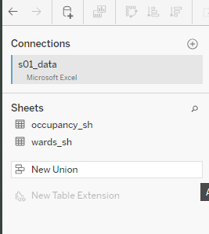
- drag
occupancy_shinto the main pane to extract the data it contains into Tableau 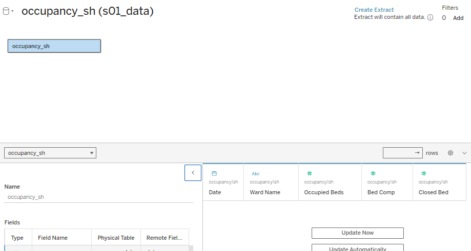 and clickCreate Extract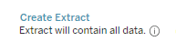 - finally, click
Publish As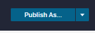 and give your workbook a suitable name 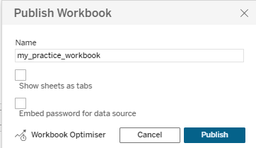
Hello world!
- let’s make a time-series graph from our data
Task
- from the left-hand
Datamenu, drag theDatetable into theColumnsshelf, andOccupied Bedsinto theRowsshelf 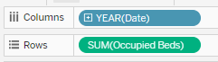 - you’ll see that Tableau has aggregated our data in a slightly unhelpful way 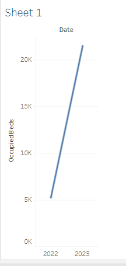
- you can change the way data is aggregated from the dropdown menu each data item has on its shelf 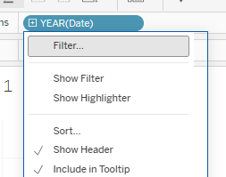
- change the
DatetoExact dateto produce a time-series graph 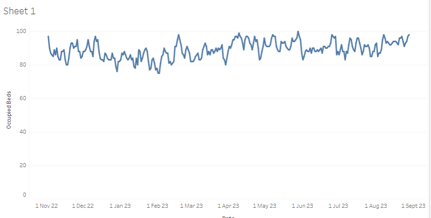
Making our chart more useful
Task
- now try dragging the WardName table onto the
Colourarea of theMarksmenu 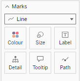 - that should split the data into different series, one per ward 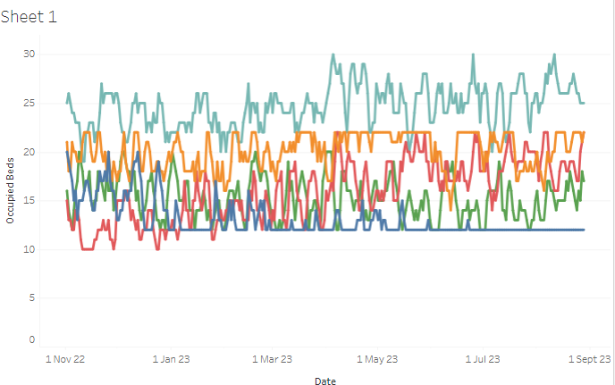
Changing the data
Task
- open
data/s01_data.xlsxin Excel (again) - change some of the values
- close the file in Excel (essential) and return to Tableau
- now
Edit Data Source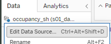, thenEdit Connection...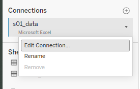 and re-upload the file - navigate back to
Sheet 1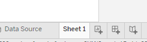 and you should see your (ruined) graph 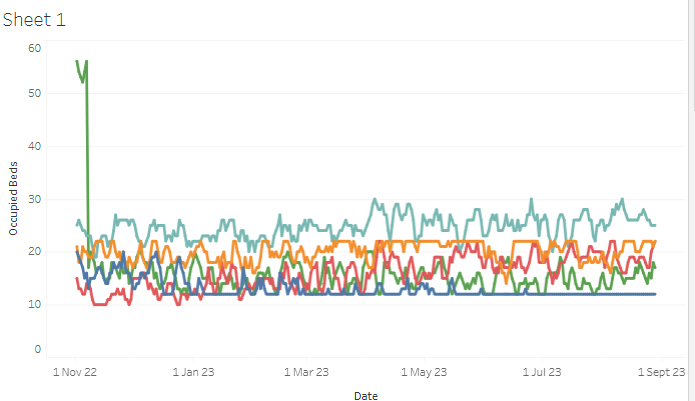 - finally, go back to Excel, fix your data, and re-upload to fix your graph
Some minor fixes
Task
- our wards are in an odd order 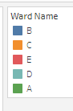
- so navigate to the
Ward Nametable, and selectDefault Properties >> Sortfrom the dropdown menu 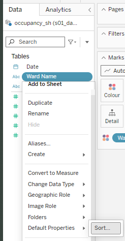 where you can then switch them to alphabetical order (or whatever else you like): 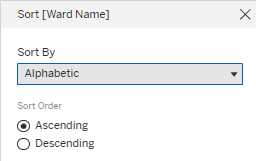 - give your worksheet a descriptive title (something like “Bed occupancy”) by double-clicking in the tab at the bottom edge of the window 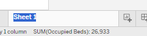
- you should see that the graph title updates to suit 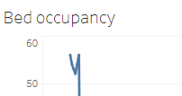
Calculated Field
- we can calculate fields, then visualize them
- we could calculate something simple for each ward - how about the number of non-closed beds available?
Task
- add a new worksheet 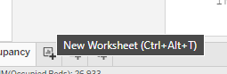
- then, from the
Datamenu, selectCreate >> Calculated Field...from one of your tables 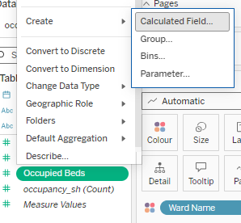 - then enter the following formula:
[Bed Comp] - ([Occupied Beds] + [Closed Bed])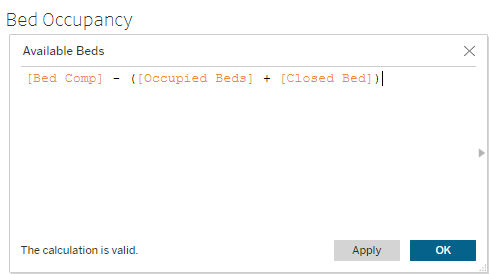
Showing off our work
Task
- select
New Dashboardfrom the tab at the bottom edge of the window 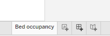 - drag your
Bed occupancyworksheet onto the dashboard 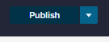{height=“300px”)} - and click
Publish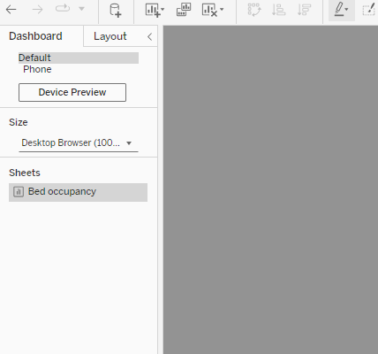
- you should then be able to see a public preview of your dashboard in your profile 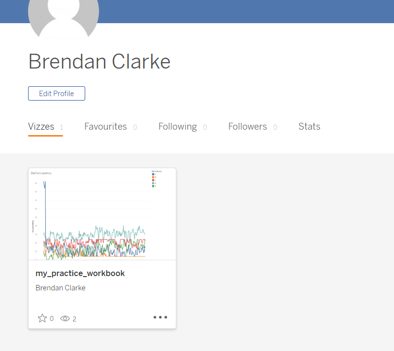
Homework tasks
- Try using the filters pane to play with your dashboard. How do filters change your visualization?
- Can you plot the
Available Bedstable as a time series on a new worksheet? - Could you find a neat way of visualizing how often a ward becomes overcrowded?